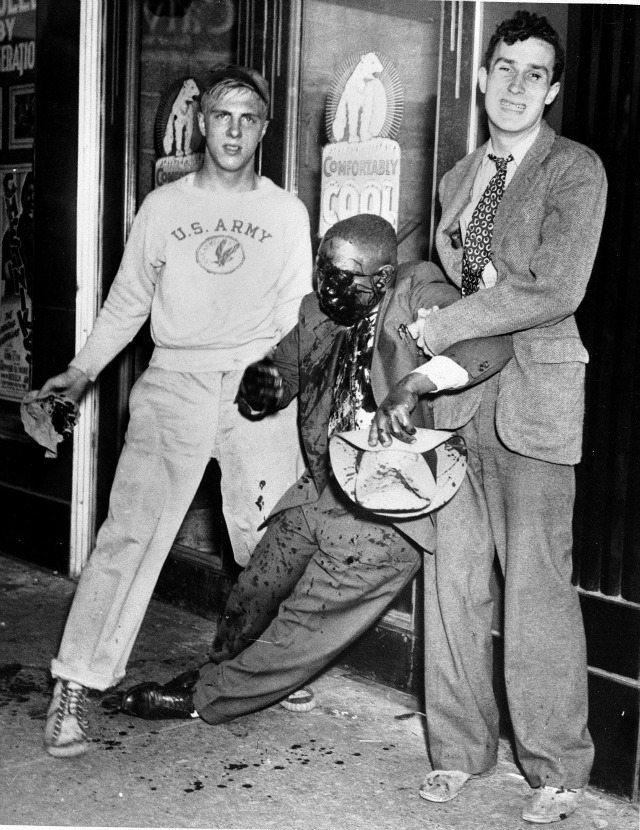

Knowing your history isn't always fun or easy but today its unfortunately become a lot easier because it has been repeating itself… a lot. The problem with history is, those who don't learn from it are doomed to repeat it, or more accurately put, those who are systematically oppressed in the past will continue to be systematically oppressed in the future so long as the institutions, laws, and people in power that enforce such oppression continue to be the ones in power to make sure nothing changes. Today the past mirrors the present and gives a frightening indication of what the future can and might be.
There is a problem when the same crisis hits the same place and there is still no solution. "Fool me once, shame on you. Fool me twice, shame on me." Except the shame is still on the American people that watched Louisiana suffer over a decade ago, and they are watching them suffer again. Hurricane Katrina was the largest hurricane ever recorded to make landfall in the US, peaking at a Category 5 with winds up to 175mph. An estimated 80% of New Orleans was under water then. The Baton Rouge flood has left 60,000 homes damaged or destroyed. The governor said the floods caused roughly $8.7bn in damage. People are left homeless and forced to find shelter elsewhere or in hotels, paying out of pocket.
The flood in Louisiana is not the only historic parallel that is going on in America today. It seems as though historically black pride has always been deemed un-American, especially by America's athletes. Pro black ≠ Anti-white. The "un-American" behavior is shown several times throughout history most notably at the 1968 Olympics and the 2016 Olympics. For those who do not know what the first event refers to here is the gist of it, two African American male sprinters who had just won medals for their events, bowed their heads and raised their fists in the Black Power salute position. They were later stripped of their medals and suspended from the team, even receiving death threats. Now, almost 50 years later after the 1968 Olympics a similar act has taken place. Gabby Douglas, an Olympic gymnast received harsh comments due to her failure to place her hand over her heart during the pledge of allegiance.
Today thug is the new n*gger (and I'm black so I can say that word although I won't right now but that's a different story for a different time). There is an over use of “thug” to represent any black person. While many of the people being called a “thug” were no saint, they also are not deserving of the label as a thug. The word thug, which has mainly only been used as a label for blacks and Latinos nowadays, is being compared to the 21st century version of the word n*gger. If all that people hear is that black people are thugs (n*ggers), then that is the stigma that will continuously be believed. With all the people speaking out about the word thug, and recognizing what people TRULY want to say that word, it is only a matter of time before “thug” is reclaimed by the black community and some other harsh word becomes the new n*gger.
Police brutality is nothing new. The hatred of black people in America is nothing new. The deaths and abuse of innocent people at the hands of white racists such as the KKK is nothing new.